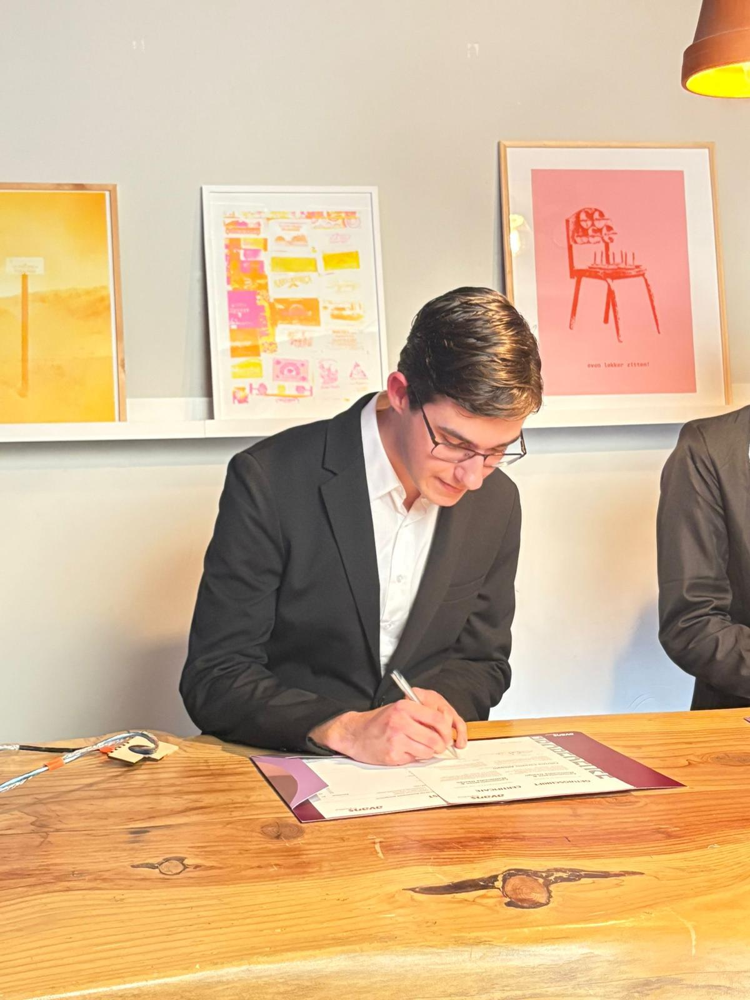

Welkom op mijn portfolio website.
Ik ben Fabrizio, ik ben 19 jaar en ik heb altijd al van story games gehouden. In mijn (vele) jaren van games spelen, ben ik geïnspireerd geraakt door verschillende games.
O.a. door Life is Strange en Genshin Impact. Vanwege o.a. deze games is mijn uiteindelijke doel om verhalen te maken die mensen een andere kijk op het leven geeft op een inspirerende, meelevende, maar gutwrenching manier.
Op deze website is een overzicht te vinden van mijn projecten die ik heb gemaakt tijdens mijn studie CMD en in mijn vrije tijd.
Ik hoop dat de projecten die ik heb gemaakt een idee geeft van wie ik ben, wat ik leuk vind en wat ik heb geleerd. Veel plezier met het verkennen van mijn werk!
Tip: Klik op de polaroids om de afbeelding te vergroten.
